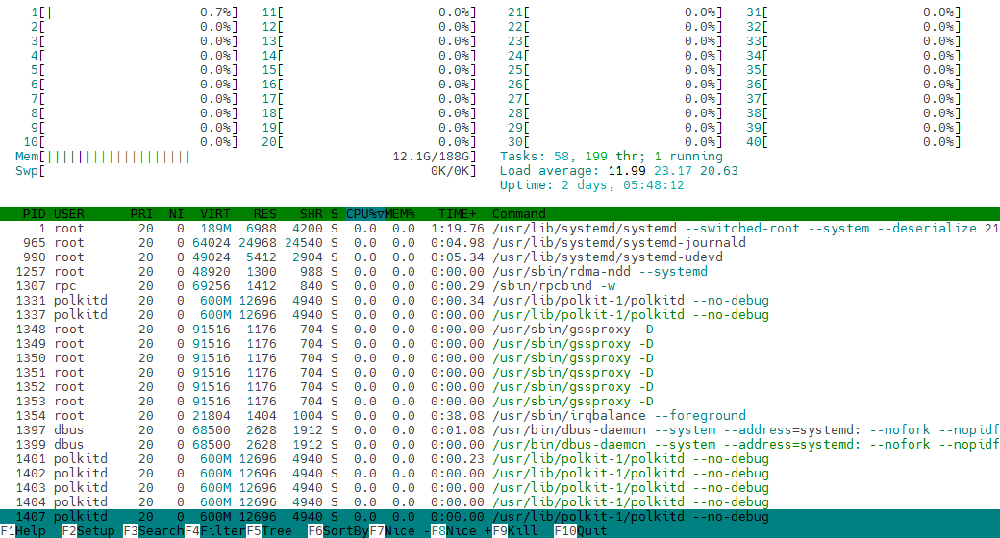
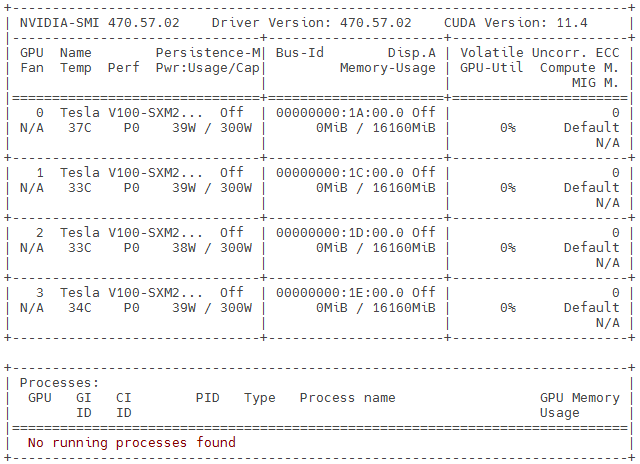

Bien choisir les ressources
Contenu
Bien choisir les ressources¶
Il y a plusieurs ressources informatiques qui vous sont disponibles à l’Alliance de recherche numérique du Canada :
Calcul haute performance
Béluga, Cedar, Graham, Narval, Niagara
Stockage
Temporaire, projet, nearline, dépôt de données de recherche
Infonuagique
Arbutus, Béluga, Cedar, Graham
Le principal but de ce chapitre est de vous permettre d’analyser vos besoins en ressources de calcul haute performance, et ce, dans le but de choisir les ressources nécessaires pour votre projet.
Rappel - le calcul haute performance¶
Lorsqu’il est question de lancer une grande quantité de calculs (séquentiels ou parallèles) ou de traitements de données, l’utilisation d’une grappe de calcul haute performance devient nécessaire.
Puisque les ressources sont partagées et en grande demande, chaque tâche doit être soumise à un ordonnanceur de tâches.
Il devient donc nécessaire d’estimer à l’avance les ressources qui seront réservées lors de l’exécution d’un calcul.
Dans cette section, on cherche à évaluer le comportement d’une tâche de calcul afin d’estimer et d’optimiser les ressources à réserver sur la grappe de calcul.
Objectif - construction d’un script de tâche Slurm¶
Un script de tâche pour l’ordonnanceur Slurm est typiquement un script Bash dans lequel on retrouve :
Le shebang en toute première ligne. Par exemple :
#!/bin/bashLes options
#SBATCHen entête pour les besoins de la tâche. Les options en entête seront lues par la commande de soumission de tâchesbatchChargement des modules requis
Les commandes Bash qui seront exécutées automatiquement sur des processeurs réservés pour la tâche
Par exemple : scripts/mpi_allo.sh
cat scripts/mpi_allo.sh
#!/bin/bash
#SBATCH --ntasks=10
#SBATCH --mem-per-cpu=1000M
#SBATCH --time=0-00:10
mpirun printenv HOSTNAME OMPI_COMM_WORLD_RANK OMPI_COMM_WORLD_SIZE
Notre documentation à cet effet débute à la page : Exécuter des tâches
Analyse des calculs à petite échelle¶
Lorsqu’une tâche de calcul est en cours d’exécution, vous pouvez surveiller différentes métriques :
Utilisation CPU (et GPU, s’il y a lieu)
Mémoire résidente (réellement utilisée)
Mémoire virtuelle (allouée)
Les accès au stockage
Sous Windows¶
Pour le faire afficher :
Raccourcis clavier Ctrl+Alt+Suppr ou cliquer sur la barre des tâches avec le bouton droit
Cliquer sur l’option Gestionnaire des tâches

Sous Mac OS¶
Pour le faire afficher :
Démarrer l’application à partir des Applications et Utilitaires de Mac OS
Sinon, utiliser le raccourcis clavier Commande+Espace et taper les premières lettres de « Moniteur d’activité » pour pouvoir sélectionner cette application

Sous Linux¶
Dans un terminal Unix, on peut utiliser :
La commande
top(qpour quitter)

La commande
htop(qpour quitter)

Sur la grappe de calcul directement¶
Avec votre accès par défaut, vous avez un compte de calcul def-* de base
vous permettant de lancer des tâches de test.
Ressources utilisées d’une tâche terminée¶
ssh login1
...
Note : pour accéder aux grappes de calcul en production, il vaut mieux utiliser une paire de clés SSH.
Pour soumettre un script, on fait :
sbatch scripts/blastn-gen-seq.sh
Pour voir l’état de la tâche, on ferait :
squeue -u $USER # ou 'sq'
Avec la commande sacct, on peut obtenir un tableau de nos tâches exécutées depuis minuit.
sacct
Avec la commande seff,
on peut obtenir un court rapport d’exécution de tâche.
Ce rapport inclut une mesure du temps écoulé, une mesure du temps CPU
et une mesure de consommation maximale de la mémoire-vive.
Des valeurs d’efficacité en pourcentages sont données pour les cycles CPU
et la mémoire-vives en fonction des quantités réservées.
seff <No_tâche>
Ressources utilisées par une tâche CPU en cours¶
Étant donné un certain calcul matriciel dans le script Python
scripts/crunch.py :
less scripts/crunch.py # q pour quitter
Lors d’une tâche interactive, on peut utiliser top et htop pour surveiller les ressources utilisées :
# Tâche interactive et installation de modules Python
salloc --gres=gpu:1 --ntasks-per-node=4 --mem=8000M --time=0:9:0
less scripts/installer/cupy_tmp.sh # q pour quitter
bash scripts/installer/cupy_tmp.sh
# Exécution avec un processeur
less scripts/crunch_1cpu.sh # q pour quitter
bash scripts/crunch_1cpu.sh # q pour quitter
# Exécution avec 4 processeurs
less scripts/crunch_4cpu.sh # q pour quitter
bash scripts/crunch_4cpu.sh # q pour quitter
# Comparer les résultats
grep sec *.log
exit # Pour revenir à login1
Ressources utilisées par une tâche GPU en cours¶
# Tâche interactive et installation de modules Python
salloc --gres=gpu:1 --ntasks-per-node=4 --mem=8000M --time=0:9:0
bash scripts/installer/cupy_tmp.sh
Pour Windows et Mac OS, il existe des outils propriétaires permettant de visualiser en temps réel l’utilisation du GPU. Veuillez vous référer au site Web du manufacturier de votre GPU pour les détails
Sous Linux, il y a d’abord la commande
nvidia-smi
nvidia-smi

Il existe aussi un projet
nvtoppermettant de visualiser l’utilisation d’un ou plusieurs GPUs dans un terminal
# Exécution avec 1 GPU
less scripts/crunch_1gpu.sh # q pour quitter
bash scripts/crunch_1gpu.sh # q pour quitter
# Regarder le résultat
less tg.log # q pour quitter
exit # Pour revenir à login1

Comparer la vitesse CPU vs GPU¶
Avant d’utiliser massivement les GPUs d’une grappe de calcul, il faut tout d’abord que l’application ou l’algorithme puisse démontrer une « bonne performance » en utilisant plusieurs processeurs en parallèle.
Quelques définitions :
Temps écoulé = temps d’exécution total que l’on perçoit et non le temps CPU
Accélération = (temps avec un processeur) / (temps avec parallélisme)
Efficacité = (Accélération) / (nombre de processeurs)
Le coût d’un noeud GPU étant de quatre à cinq fois supérieur à celui d’un noeud régulier, l’utilisation d’un seul GPU doit permettre une accélération d’au moins quatre fois (4x) la vitesse de huit (8) à douze (12) processeurs.
Accélération = (temps avec 8 à 12 processeurs) / (temps avec un accélérateur)
Exercice - Calcul d’accélération et d’efficacité¶
En supposant les résultats suivants pour un programme parallèle lancé sur \(n\) processeurs :
grep sec t*.log
\(n\) proc. |
temp (s) |
|---|---|
1 |
9.876 |
4 |
5.220 |
Étant donné le script scripts/calc-acc-eff.sh :
bash scripts/calc-acc-eff.sh 1:9.876 4:5.220
bash scripts/calc-acc-eff.sh 1:9.876 8:0.035
Extrapoler les ressources nécessaires¶
Efficacité cible du calcul parallèle¶
Une efficacité de 80%, voire 90%, devrait être un seuil minimal pour les tâches parallèles. Or, il existe un nombre maximal de processeurs à utiliser pour respecter ce seuil :
Voir la figure dans la page loi d’Amdahl
Matériel en extra ici
On vise aussi une consommation en mémoire-vive de l’ordre de 80% de ce qui est demandé à l’ordonnanceur Slurm
Rappel - vous pouvez obtenir ces pourcentages via les commandes sacct -X (surtout pour obtenir les numéros de tâches) et seff. Les valeurs à considérer sont :
CPU UtilizedetCPU EfficiencyMemory UtilizedetMemory Efficiency
Taille des données et nombre de fichiers à traiter¶
Pour un calcul donné, il y a deux métriques de stockage à considérer :
La quantité totale en octets (ou Go)
Le nombre total de fichiers
Pour obtenir ces informations :
Sous Windows : dans l’explorateur Windows (raccourcis clavier : Windows + E)
Sélectionner un dossier ou plusieurs fichiers
Bouton droit de la souris -> Propriétés

Sous Mac OS : dans Finder
Sélectionner un dossier ou plusieurs fichiers
Bouton droit de la souris -> Get Info
Autrement : avec l’affichage Par liste
Sous Linux :
L’environnement graphique peut offrir le même genre d’outils, mais tout dépend de la distribution et du bureau.
La commande
du -bs DOSSIER(b: taille apparente en octets,s: somme totale) calcule récursivement et affiche la taille totale en octets. La taille apparente est celle qui importe lors d’un transfert ou d’une sauvegarde de données.La commande
find DOSSIER | wc -lcompte récursivement et affiche le nombre de fichiers et de sous-dossiers.
Stockage en mémoire selon les types de base¶
En ayant une idée de la taille des données à traiter, il devient possible d’estimer l’espace que les données prendront en mémoire-vive.
Dans un fichier texte, chaque caractère prend de un (1) à deux (2) octets, en moyenne. Cependant, pour certaines langues, l’encodage UTF-8 peut se rendre jusqu’à quatre (4) octets par caractère. Pour les langues latines et germaniques, on peut considérer deux (2) octets par caractère. Par exemple, dans une session Python :
python
>>> import sys
>>> euro = ""
>>> sys.getsizeof(euro)
49
>>> euro = "Euro"
>>> sys.getsizeof(euro)
53
>>> euro = "€"
>>> sys.getsizeof(euro)
76
>>> euro *= 2 # Donc "€€"
>>> sys.getsizeof(euro)
78
>>> quit() # ou Ctrl+D pour sortir
Les nombres entiers prennent typiquement 2 octets (16 bits), 4 octets (32 bits) ou 8 octets (64 bits) chacun. Tout dépend de la plage de valeurs souhaitée :
2 octets : ~65 milles valeurs de \(0\) à \(65535\), ou de \(-32767\) à \(32767\)
4 octets : ~4 milliards de valeurs de 0 à \((2^{32}-1)\) ou de \(-(2^{31}-1)\) à \((2^{31}-1)\)
8 octets : ~18 trillions de valeurs de 0 à \((2^{64}-1)\) ou de \(-(2^{63}-1)\) à \((2^{63}-1)\)
module load python scipy-stack
python
>>> import sys
>>> import numpy as np
>>> cube = np.zeros((100,100,100), dtype=np.int64)
>>> sys.getsizeof(cube)
8000136
>>> cube = np.zeros((100,100,100), dtype=np.int32)
>>> sys.getsizeof(cube)
4000136
>>> np.iinfo(np.int16)
iinfo(min=-32768, max=32767, dtype=int16)
Les nombres à virgule flottante prennent typiquement 4 octets (32 bits) ou 8 octets (64 bits) chacun, mais on voit de plus en plus différents types de données à 2 octets (16 bits) dans des applications d’apprentissage-machine. Il se peut néanmoins que les données soient initialement en simple ou double précision:
simple précision : 4 octets, une résolution de 23 bits (~7 décimales), une échelle de 8 bits (\({10}^{-38}\) à \({10}^{38}\))
double précision : 8 octets, une résolution de 52 bits (~16 décimales), une échelle de 11 bits (\({10}^{-308}\) à \({10}^{308}\))
>>> cube = np.ndarray((100,100,100), dtype=np.float32)
>>> cube[0,0,0] = np.pi
>>> print(cube[0,0,0])
3.1415927
>>> print(cube[0,0,0], np.pi)
3.1415927 3.141592653589793
Certains langages utilisent systématiquement 8 octets (64 bits) par nombre.
Certains compilateurs et certaines bibliothèques peuvent calculer des valeurs représentées avec 128 bits ou plus.
Pour les nombres complexes, on multiplie l’espace mémoire par deux (2).
Exemple de calcul de l’espace-mémoire :
>>> nb_matrices = 3 # Trois matrices C = prod_mat(A, B)
>>> taille = 25000 # Matrices carrées
>>> octets_par_nombre = 8 # Double précision
>>> memoire = nb_matrices * taille*taille * octets_par_nombre
>>> memoire / 1000**3
>>>
>>> quit() # ou Ctrl+D pour sortir
La complexité des algorithmes¶
La question qui se pose : en augmentant la ou les dimensions du problème, quelles devraient être la durée du calcul et la consommation en mémoire-vive? Une analyse de la complexité de l’algorithme principal permettrait de connaître l’ordre \(O\) du calcul en fonction de la taille \(n\) des données :
\(O(n)\): proportionnel à \(n\)
\(O(n*m)\): représente un calcul à deux (2) dimensions indépendantes
\(O(n^3)\): calcul d’ordre cubique
\(O(n*m*k^2)\): par exemple, un filtre de taille \(k*k\) sur une image \(n*m\)
\(O(n*log(n))\): typique de certains algorithmes de tri où il y a \(n\) éléments à trier en \(log_2(n)\) étapes.
Une analyse détaillée du code (s’il est disponible) n’est pas nécessaire pour déterminer le type de calcul qui est fait.
Vous pouvez vous inspirer des données en entrées pour deviner l’ordre du calcul principal.
Vous pouvez mesurer le temps d’exécution en fonction de la taille du problème. En extrapolant les résultats, il serait possible de prévoir le comportement du programme sur une grappe de calcul.
Exercice - Complexité de l’algorithme¶
Dans cet exercice, il est question d’inverser une matrice de valeurs aléatoires de taille \(n*n\) :
Soumettre le script
scripts/inv-mat.shavec la commandesbatch:
sbatch scripts/inv-mat.sh
Explorer les scripts Python
scripts/inv-mat.pyetscripts/inv-mat.sh:
cat scripts/inv-mat.py
cat scripts/inv-mat.sh
Suivre l’évolution du calcul avec
squeue -u $USER, environ aux 30 secondesLe résultat sera sauvegardé dans le fichier
temps_inv.csvAnalyse avec Python, Pandas et Numpy dans le script
scripts/inv-mat-pred.py:
module load gcc python scipy-stack
cat scripts/inv-mat-pred.py
python scripts/inv-mat-pred.py temps_inv.csv
Principales différences entre les grappes de calcul¶
À propos des grappes :
Mise en production |
Mars 2019 |
Juin 2017 |
Juin 2017 |
Octobre 2021 |
Avril 2018 |
Ville |
Montréal |
Burnaby |
Waterloo |
Montréal |
Toronto |
Province |
Québec |
C.-B. |
Ontario |
Québec |
Ontario |
Nombre de processeurs (coeurs CPU) selon le cas :
Processeur Intel/AMD |
|||||
|---|---|---|---|---|---|
Broadwell (avx2) |
724 * 32 |
983 * 32 |
|||
Skylake (avx512) |
802 * 40 |
640 * 48 |
1548 * 40 |
||
Cascade Lake (avx512) |
768 * 48 |
72 * 44 |
468 * 40 |
||
EPYC Rome (avx2) |
1142 * 64 |
Mémoire par proc. |
|||||
|---|---|---|---|---|---|
2400M |
6400 |
||||
4000M |
86016 |
28896 |
70976 |
||
4400M |
3168 |
||||
4800M |
23560 |
80960 |
|||
8000M |
3072 |
1792 |
|||
16000M |
768 |
768 |
|||
19200M |
2120 |
||||
32000M |
2112 |
||||
48000M |
768 |
192 |
|||
96000M |
128 |
Nombre de GPUs selon le cas :
Accélérateurs |
|||||
|---|---|---|---|---|---|
NVIDIA P100 12G |
456 |
320 |
|||
NVIDIA P100 16G |
128 |
||||
NVIDIA T4 16G |
144 |
||||
NVIDIA V100 16G |
688 |
54 |
|||
NVIDIA V100 32G |
768 |
16 |
216 |
||
NVIDIA A100 40G |
632 |
Réseau haute-performance et ordonnancement :
Connexion rapide |
InfiniBand |
OmniPath |
InfiniBand |
InfiniBand |
InfiniBand |
Topologie |
En arbre |
En arbre |
En arbre |
En arbre |
DragonFly+ |
Taille îlots (proc) |
640 à 1200 |
1024 à 1536 |
1024 |
3072 à 3584 |
17280 |
Facteur de blockage |
max 5:1 |
max 2:1 |
max 8:1 |
max 4.7:1 |
max 2:1 |
Granularité des tâches |
/proc /GPU |
/proc /GPU |
/proc /GPU |
/proc /GPU |
/noeud |
Durée maximale |
7 jours |
28 jours |
28 jours |
7 jours |
1 jour |
Stockage : le tout sera décrit au dernier chapitre.
Points à retenir¶
Prévoir les paramètres d’une tâche Slurm
Nombre de processeurs (CPU) et de noeuds de calcul
Nombre d’accélérateurs (GPU)
Quantité de mémoire-vive (RAM)
Temps du calcul (
JJ-H:MouH:M:S)
Différents outils pour surveiller les ressources utilisées
timeet autres bibliothèques de mesure du temps écoulétop,htop,nvtop,nvidia-smisacct,seffdu -bs,find | wc -let autres outils du système d’exploitation
On vise une efficacité de 80% pour les tâches parallèles CPU
L’accélération avec un accélérateur (GPU) doit être significative (>4x)
Le choix de la grappe dépend des besoins de chaque type de calcul